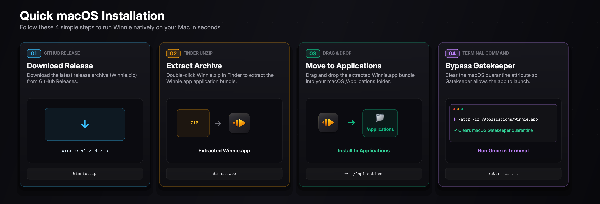

You’ve never understood Python code this clearly
A native macOS Python IDE built for visual learning, step-by-step execution, and frictionless problem solving.
See execution line by line
Step through your Python code statement by statement. Winnie highlights every active line and call stack frame in real time, so you never have to guess how control flows.
No hidden state. None.
Watch your data structures evolve with zero debugger setup. Winnie automatically tracks locals, globals, dictionary mutations, and recursion frames directly in a clean inspector.
160+ curated problems, zero tab switching
Master algorithms directly inside your IDE. 18 comprehensive categories with interactive Big-O complexity curves, test cases, and instant validation.
Also included
Features you’d expect (and more!)
Native macOS Performance
Fast, memory-efficient PyQt6 architecture tailored for macOS. Smooth scrolling, instantaneous startup, and negligible RAM overhead compared to Electron apps.
Built-in Pip Package Manager
Search, install, upgrade, and delete PyPI packages visually with one click. Automatic environment detection keeps your dependencies isolated.
Ligature-Free Clarity
Disabled font ligatures ensure code operators like !=, ==, <=, and >= look exactly like the characters you type, preventing syntax misconceptions.
Interactive REPL Shell
Instant snippet testing and interactive scratchpad. Variables persist across commands so you can prototype algorithms without writing temporary files.
Zero Configuration
No configuration JSON files, complex launch scripts, or debugger configurations. Winnie auto-detects Python 3 and runs out of the box.
100% Free & Open Source
MIT Licensed on GitHub. Zero tracking, zero telemetry, no accounts or logins required, and fully offline compatible.
Loved by developers & learners
Students, educators, and engineers use Winnie to teach, learn, and debug Python code with zero cognitive friction.
“Teaching recursion and binary tree traversal used to involve messy whiteboard diagrams. With Winnie’s live variable and stack view, students immediately see the call frames unfold.”
“I love VS Code, but opening it just to solve a quick LeetCode problem felt like launching an entire operating system. Winnie opens instantly and has 160+ problems built right into the sidebar.”
“The fact that font ligatures are turned off by default is brilliant. Beginners always get confused when != turns into a single glyph. Winnie is thoughtful in every single detail.”
Up and running in 10 seconds
Download, drop into Applications, and start coding.
Download & Unzip
Download Winnie-macOS.zip from GitHub Releases and extract it to reveal Winnie.app.
Drag to Applications
Move Winnie.app into your macOS /Applications folder.
Clear Gatekeeper Quarantine
Because Winnie is self-signed, run this single terminal command once to authorize the app:
xattr -cr /Applications/Winnie.app

People often ask
Everything you need to know about Winnie.
Yes! Winnie is 100% free and open-source under the MIT license. There are no subscriptions, ads, paid tiers, or account logins. You can inspect the complete source code on GitHub.
Yes. Winnie is compiled as a Universal 2 macOS application. It runs natively on all M1, M2, M3, and M4 Apple Silicon Macs as well as Intel-based Macs running macOS 12 (Monterey) or newer.
Heavy IDEs like PyCharm and VS Code are powerful for large production repositories, but require configuring JSON launch files, interpreter paths, and debugger plugins just to inspect simple loops. Winnie is purpose-built for visual understanding: step execution and variable tracing work instantly without configuration, with 160+ algorithmic challenges ready to solve.
Absolutely. Winnie includes a built-in visual Package Manager window that searches PyPI and lets you install packages like requests, numpy, or pygame directly into your environment.
Zero. Winnie has no telemetry, no analytics, no network pings, and does not require an internet connection to run your code or practice problems. Your code stays completely on your machine.